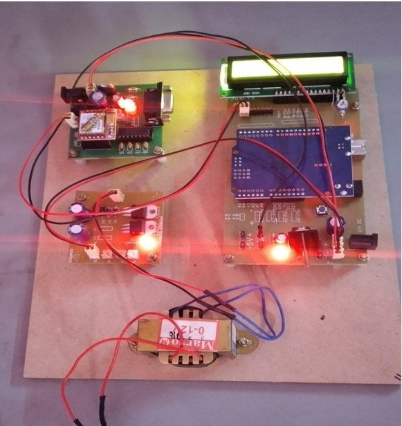

Hi,
I'am BIPIN
Electrnoics
And
Communication
Engineering
About
"Optimism is the faith that leads to achievement"
A 21 years old developer , Tech enthusiast, community builder. I am a keen observer and passionate learner who's always willing to learn something new. Besides I always be in search of various online and offline platforms to explore various domains of my interest in it and increase my experimental knowledge.
Skills
Profesional Skills

Projects
1. SIGNAL GENERATOR USING IC 555 TIMER
Dec 2018 – Jan 2020
The signal generator generates the 5 different types of signals, which are inserted in one circuit. Here in this project we can see the frequency levels of the different signals. Here is a simple and very easy to build signal generator gadget capable of producing different type of signal tones. The gadget is built around five 555 timers placed on a single PCB board. The type of signal can be selected from the appropriate combinations of switches to be closed based on the switches connected to the circuit.

2. IOT BASED HUMIDITY AND TEMPERATURE MONITORING USING NODE MCU ESP8266
Sep 2020 – Oct 2020
The Internet of Things is a network of smart sensors that can control and monitor things from anywhere over the Internet. This smart capsule called Node MCU ESP8266 microcontroller and the DTH11 humidity and temperature sensor to send data to the Blynk server over a Wi-Fi network. Arduino IDE was used to write a C++ code for the microcontroller. The Blynk mobile application was used to monitor and display real-time humidity and temperature data through the digital dashboard. The ESP8266 module is of low cost and come pre-programmed with an AT command set firmware, you can simply hook this up to your Arduino device and get about as much Wi-Fi ability as a Wi-Fi Shield offers. This module has a powerful on-board processing through its GPIOs (General-Purpose Input/output), this project is all about Humidity and Temperature Monitoring using DHT11 and Node MCU on Blynk App. It explains how to log Temperature and Humidity data on the cloud.
3. E-DESK USING EMBEDDED SYSTEM
Jan 2021 – Feb 2021
The short message system (SMS) of a standard mobile phone can be used for much more than just exchanging cryptic message. This application finds a humble mobile working for controlling external equipments. The SMS service provides by the service providers are comparatively low cost. Hence the system is highly efficient and low-cost. In this SMS techniques together with the micro controller technology are used in a wide variety of applications in industry, including computer peripherals, business machines, motion control, and robotics, which are, included in process control and machine tool applications. The automation system is designed by keeping in mind that it should be user friendly and it should be possible to operate it from anywhere in the world. This system is designed in such a way to reduce the wiring complexity and manpower. By using the GSM technology an user can send any message to the notice board and the same message should be displayed on the LCD.
4. FACE DETECTION IN CROWD USING DEEP LEARNING
Apr 2021 – Jun 2021
Face detection is a computer vision technology that helps to locate/visualize human faces in digital images. This technique is a specific use case of object detection technology that deals with detecting instances of semantic objects of a certain class (such as humans, buildings or cars) in digital images and videos. With the advent of technology, face detection has gained a lot of importance especially in fields like photography, security, and marketing. Detection of human is a prerequisite for density estimation, tracking, activity recognition and anomaly detection even in non-congested areas. This work robust hybrid approach for face detection in crowd by Deep Learning. Deep learning is part of a broader family of machine learning methods based on artificial neural networks with representation learning.